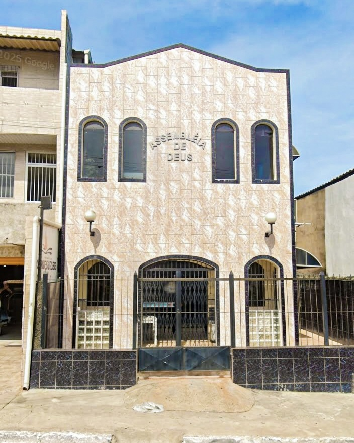
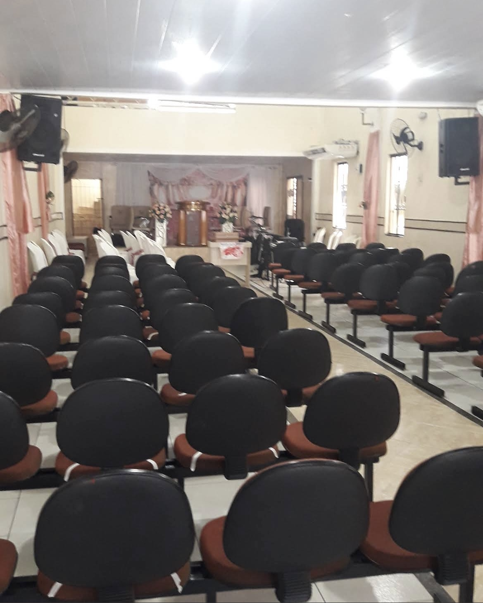

Assembleia de Deus · Boca da Mata
Uma igreja de portas abertas para você e sua família.
Venha adorar a Deus, aprender a Palavra e fazer parte de uma comunidade que caminha junto.

A paz do Senhor! Seja muito Bem-vindo ao site da Assembleia de Deus em Boca da Mata - Ad Boca da Mata 1
Quem somos
Uma igreja que ama a Palavra de Deus e as pessoas.
Somos a Assembleia de Deus em Boca da Mata, uma igreja de portas abertas que vive a Palavra, a oração e a comunhão, acolhendo cada pessoa e cada família para adorar a Deus e caminhar juntos no Evangelho de Jesus.
Nossa missão é reunir pessoas em oração, adoração e estudo da Palavra, para que cada família seja restaurada por Deus e viva o Evangelho de Jesus. Valorizamos a Palavra, a oração, a comunhão e o acolhimento, de portas abertas para todos.
